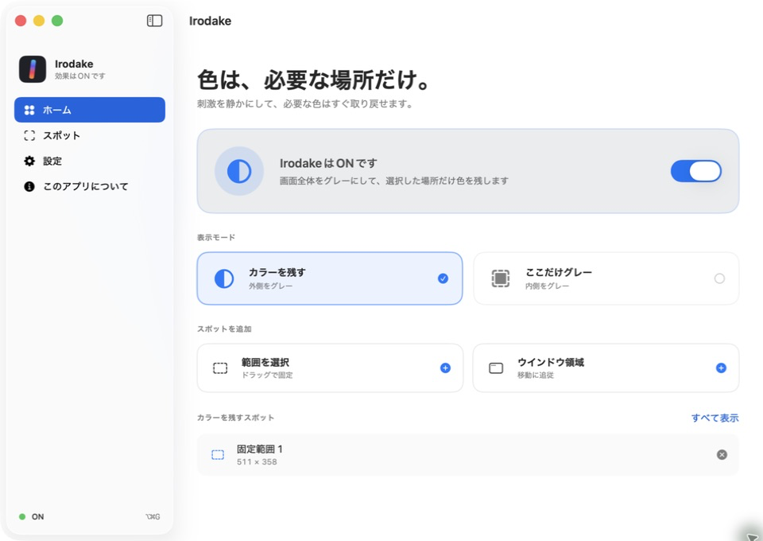
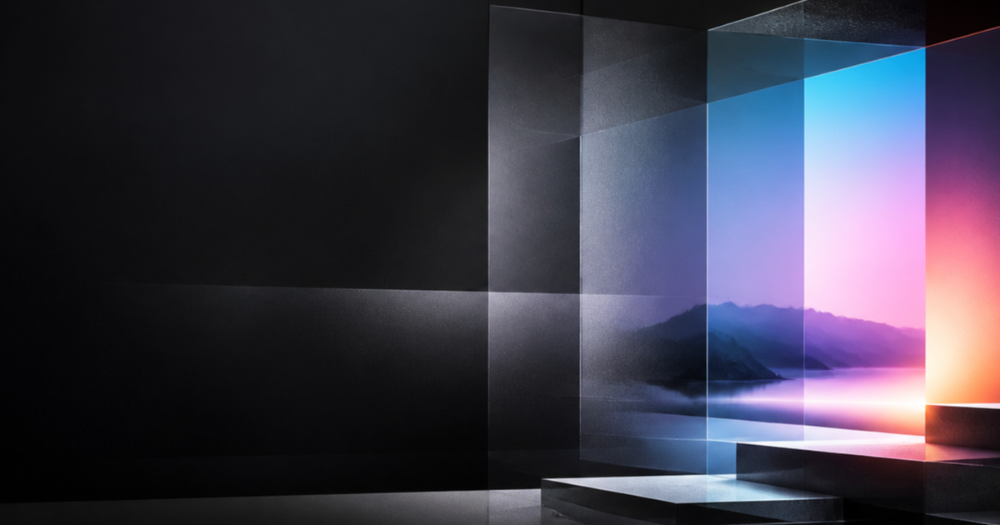
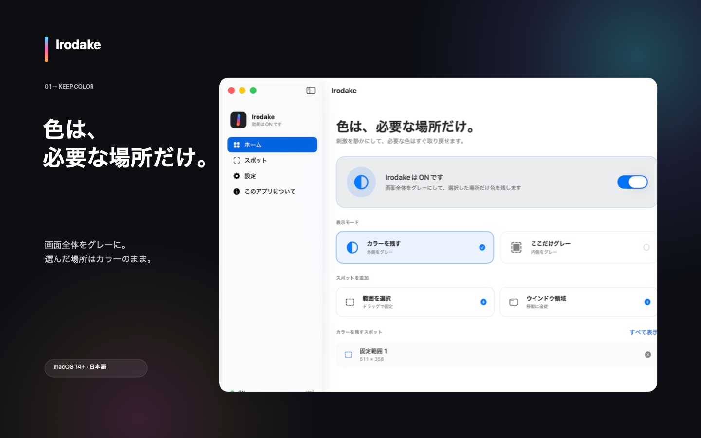
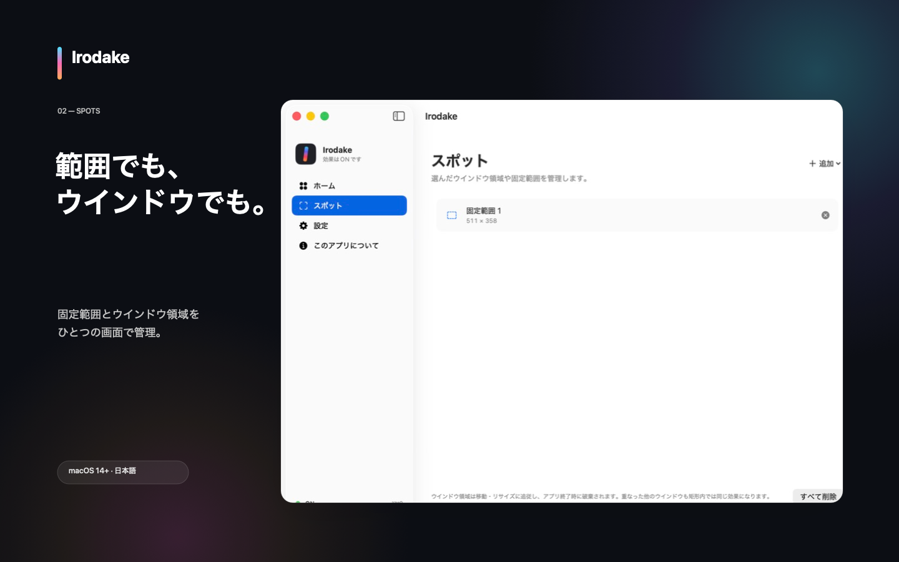
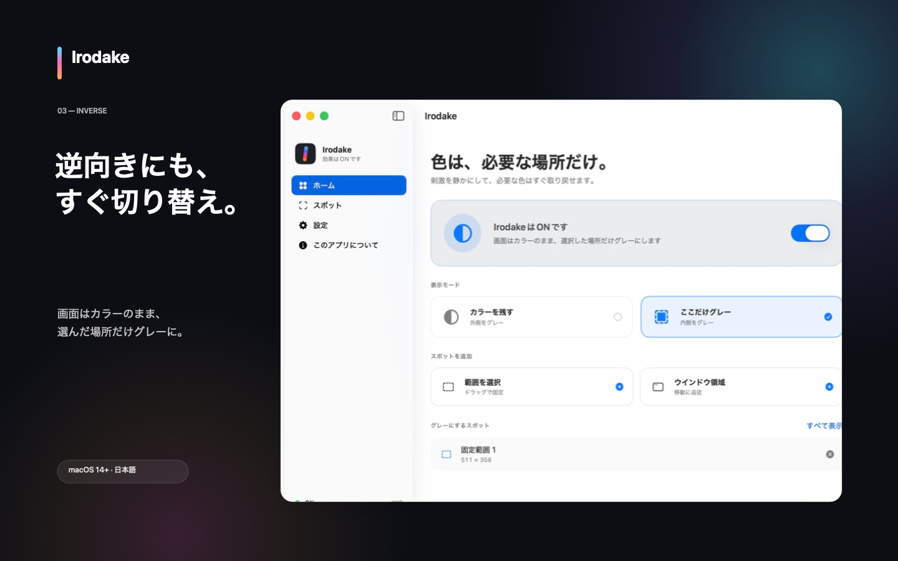
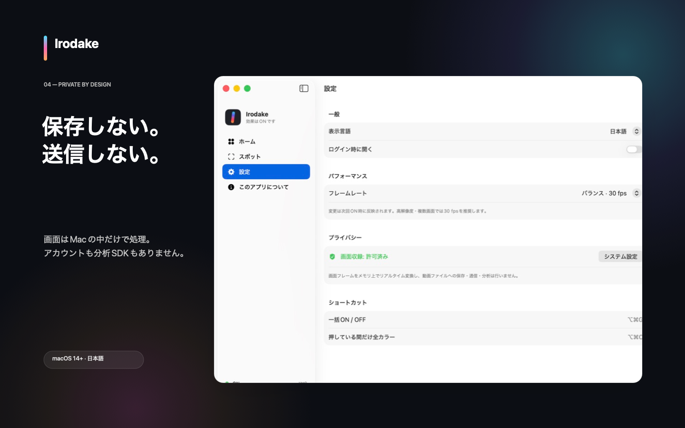

外側をグレーに
画面全体の刺激を抑えながら、選んだ範囲やウインドウ領域だけカラーを残します。
Selective color for macOS
Mac全体を静かなグレーに。必要な場所だけカラーを残し、見たい瞬間にはすぐ色を取り戻せます。

Features
範囲でもウインドウでも。普段の画面を邪魔せず、必要な情報だけを視覚的に際立たせます。
画面全体の刺激を抑えながら、選んだ範囲やウインドウ領域だけカラーを残します。
通常はカラーのまま、気になる場所だけグレーにする逆モードにも切り替えられます。
メニューバーとショートカットから一括ON/OFF。押している間だけ全カラーも確認できます。
See it in action
実際のアプリ画面を使って、2つの表示モードとスポット管理の流れを紹介します。画像を選ぶと原寸で確認できます。

カラーを残す
「カラーを残す」を選び、固定範囲またはウインドウ領域を追加します。

複数のスポットをひとつの画面で確認し、必要に応じて追加・削除できます。

画面はカラーのまま、選んだ場所だけグレーにする使い方にも対応します。
Built for your Mac
画面フレームはMac上でリアルタイム処理されます。録画ファイル、外部送信、アクセス解析、広告SDKはありません。
Privacy Policy
最終更新日: 2026年8月16日

選択した範囲の色を変換するため、macOSのScreenCaptureKitを使用して画面フレームを取得します。フレームは表示効果を作るためにメモリとGPU上で処理され、録画ファイルとして保存されず、Macの外へ送信されません。音声キャプチャは無効です。
表示モード、固定範囲、フレームレート、表示言語などを、このMacのUserDefaultsへ保存します。選択したウインドウの名前と識別子は永続化せず、アプリ終了時に破棄します。
Irodakeの動作にはmacOSの「画面収録とシステムオーディオ録音」権限が必要です。許可はmacOSが管理し、システム設定からいつでも取り消せます。Irodakeはシステムオーディオを取得しません。
Irodakeアプリは個人データを収集せず、販売・共有もしません。ネットワーク通信機能を持たず、分析・広告・クラッシュレポートSDKを含みません。将来この仕様を変える場合は、実装、App Storeのプライバシー回答、このポリシーを同じリリースで更新します。
IrodakeをOFFにして終了した後、ターミナルで defaults delete irodake.hinoshiba.com を実行すると、ローカル設定を削除できます。App Sandboxのコンテナが残る場合は、Finderの「フォルダへ移動」で ~/Library/Containers/irodake.hinoshiba.com を開き、Irodakeをアンインストールした後に削除できます。Irodake側にサーバーデータは存在しません。
このサイトはCookie、解析スクリプト、広告、外部Webフォントを使用しません。GitHub Pagesで配信されるため、GitHubはセキュリティと配信のためにIPアドレス等の技術情報を処理する場合があります。詳しくはGitHub General Privacy Statementをご確認ください。
本ポリシーについては、support@hinoshiba.com またはGitHub Issuesからご連絡ください。運営者: hinoshiba。
Support
IrodakeをOFFにすると、表示効果は外れます。
support@hinoshiba.com
02再現手順とmacOSのバージョンを添えてください。
03脆弱性は公開IssueではなくSecurity Policyから報告してください。
macOS 14 Sonoma以降、Metal対応Macが必要です。画面収録の許可を使用します。アクセシビリティ、入力監視、Apple Events、ネットワークの権限は使用しません。
システム設定 → プライバシーとセキュリティ → 画面収録とシステムオーディオ録音でIrodakeを許可し、「終了して再度開く」を選んでください。その後、Irodakeをもう一度ONにします。
macOS標準のカラーフィルタでグレースケールが有効な場合、Irodakeは元の色を取得できません。システム設定 → アクセシビリティ → ディスプレイでカラーフィルタをOFFにしてください。
DRMや収録保護されたコンテンツは、黒、静止画、または欠落として表示される場合があります。Irodakeは保護を回避しません。
選んだウインドウの現在の矩形へ移動・リサイズ追従します。その上に別のウインドウが重なると、矩形内の重なった部分にも同じ効果がかかります。追跡ルールはアプリ終了時に破棄されます。
メニューバーのIrodakeからOFFにするか、⌥⌘Gを押してください。Irodakeを終了しても効果は外れます。
画面全体のスクリーンショットや機密情報を送る必要はありません。
Terms
最終更新日: 2026年8月16日
Mac App Storeから入手したIrodakeには、Appleの標準エンドユーザ使用許諾契約と、購入地域に適用される法令・App Storeの条件が適用されます。App Storeの購入、返金、課金処理はAppleが管理します。
GitHubで公開するIrodakeのソースコードはMIT Licenseで提供します。MIT Licenseは利用、改変、再配布、販売を許可しますが、保証はありません。第三者通知はTHIRD_PARTY_LICENSES.txtをご確認ください。
MIT LicenseはIrodakeの名称、ロゴ、公式版であることを示す表示の使用許諾を含みません。詳細はTrademark Policyをご確認ください。改変版は公式版と誤認されない名称と表示を使用してください。
Irodakeは表示を変換するユーティリティであり、医療機器や診断・治療サービスではありません。重要な表示、警告、色分けを確認する必要がある場面ではOFFにしてください。DRMや収録保護されたコンテンツは正しく表示されない場合があります。
公式版のサポートはこのページのサポート欄またはsupport@hinoshiba.comからご連絡ください。